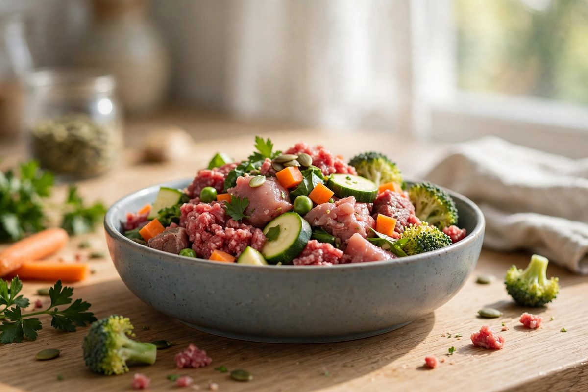

Home › Guides
Raw Diet for Cats: Benefits, Risks and How to Do It Safely

Raw feeding is one of the most debated topics in cat nutrition. Supporters say it is the natural diet for a hunter, and that it improves coats, teeth, and energy. Vets warn about bacteria, parasites, and unbalanced nutrients. The truth is more careful than either side admits, and anyone considering raw food should understand both the claims and the risks before deciding.
What a raw diet is
A raw diet usually means raw meat, bones, and organs, sometimes with added supplements, served instead of commercial food. Some owners follow a recipe from a veterinary nutritionist, while others buy ready-made raw meals that claim to be complete and balanced. The idea is to mimic what a wild cat eats.
A wild cat does eat raw prey, but it also eats the whole animal, including bones, organs, stomach contents, and fur, in proportions that are hard to copy in a kitchen. A bowl of raw chicken breast is not a whole prey animal, and that gap is where most homemade raw diets go wrong.
The claimed benefits
Owners who feed raw often report shinier coats, smaller and firmer stools, and cats that seem more enthusiastic at meal times. Some of this is real: raw diets are usually high in protein and moisture, and they contain no fillers. A cat switching from a poor-quality dry food to a well-made raw diet may genuinely look better.
But the same improvements often appear when a cat switches to any high-quality wet food. It is hard to separate the effect of raw food itself from the effect of better ingredients, more water, and more attention to the diet. There is little published evidence that raw diets are healthier than good commercial foods.
The risks: bacteria and balance
Raw meat can carry salmonella, campylobacter, E. coli, and parasites such as toxoplasma. Cats can become ill, and they can also shed bacteria in their faeces, which is a risk to children, pregnant people, and anyone with a weak immune system. Handling raw cat food safely means the same care as handling raw meat for people: clean hands, clean surfaces, and no cross-contamination.
Balance is the other risk. A raw diet needs the right ratio of meat, bone, and organ, plus calcium, taurine, and vitamins. Too much bone causes constipation and can damage teeth. Too little calcium causes bone disease. Studies of homemade raw diets repeatedly find that most are nutritionally incomplete.
If you still want to feed raw
Buy ready-made raw food from a reputable company that states it is complete and balanced, and follow its storage instructions exactly. Keep raw food frozen, defrost it in the fridge, and throw away uneaten food after half an hour. Wash bowls, hands, and surfaces after every meal.
Talk to your vet first, especially if your cat is a kitten, senior, or ill, or if anyone in the house is pregnant or immunocompromised. Never feed raw pork or raw fish from unknown sources, and never feed cooked bones. A veterinary nutritionist can check a homemade recipe for gaps before you rely on it.
Frequently Asked Questions
Is raw food better than commercial cat food?
There is no strong evidence that it is. A good commercial food is complete, balanced, and safe. Raw food can work, but it carries bacterial risks and is easy to get nutritionally wrong.
Can kittens eat raw food?
Kittens have higher nutritional needs and weaker immune systems, so raw feeding is riskier for them. Most vets recommend a complete kitten food instead.